건축설비기사 (2022-04-24 기출문제)
1과목: 건축일반
1. 합성보에서 콘크리트 슬래브와 철골보를 연결하여 일체화시키는데 사용되는 철제 보강 철물은?
- 쉐어커넥터(shear connector)
- 스티프너(stiffener)
- 래티스(lattice)
- 턴버클(turn buckle)
(정답률: 58%)

2. 건축의 성립에 영향을 미치는 요소들에 관한 설명으로 옳지 않은 것은?
- 자연 조건이 비슷한 여러 나라가 서로 다른 건축형태를 갖는 것은 기후 및 풍토적 요소 때문이다.
- 지붕의 형태, 경사 등은 기후 및 풍토적 요소의 영향을 받는다.
- 건축재료와 이를 구성하는 방법에 따라 건물 형태가 변화하는 것은 기술적 요소에서 기인한다.
- 봉건시대에는 신을 위한 건축이 주류를 이루었고, 민주주의 시대에는 대중을 위한 학교, 병원 등의 건축이 많아진 것은 정치 및 종교적 요소의 영향 때문이다.
(정답률: 62%)
3. 사무소건물에 아트리움(atrium)을 도입하는 이유와 가장 거리가 먼 것은?
- 불리한 외부환경으로부터 보호받는 오픈 스페이스를 제공하고, 건축물에 조형적, 상징적 독자성을 부여한다.
- 사무공간에 빛과 식물을 도입하여 자연을 체험하게 한다.
- 근로자들의 상호교류 및 정보교환의 장소를 제공한다.
- 보다 넓은 사무공간을 확보할 수 있다.
(정답률: 84%)
4. 리조트 호텔(Resort hotel)은 각종 관광지에서 관광객을 숙박대상으로 삼고 있는데 그 종류에 해당되지 않는 것은?
- 해변호텔(Beach hotel)
- 산장호텔(Mountain hotel)
- 철도역호텔(Station hotel)
- 클럽하우스(Club hotel)
(정답률: 75%)
5. 철근콘크리트 슬래브의 단변 방향 철근에 해당하는 것은?
- 주근
- 부근
- 늑근
- 보강근
(정답률: 58%)
6. 초등학교 건축계획에 관한 설명으로 옳지 않은 것은?
- 일반교실과 특별교실은 분리하는 것이 좋다.
- 오픈 플랜 스쿨의 교실은 공간의 개방화, 대형화, 가변화를 고려하여야 한다.
- 초등학교 저학년에 맞는 교실운영 방식은 일반교실+특별교실형(U+V형)이다.
- 초등학교 저학년의 교실은 주로 저층에 배치한다.
(정답률: 70%)
7. 쌓기 전 시멘트벽돌을 물축이기 하는 가장 주된 이유는?
- 벽돌의 파손 방지
- 모르타르의 수분흡수 방지
- 화재방지
- 백화방지
(정답률: 65%)
8. 사무소 건축에서 코어플랜(core plan)의 이점과 가장 거리가 먼 것은?
- 코어의 외곽이 내진벽 역할을 할 수 있다.
- 부지를 경제적으로 사용할 수 있으며, 사무실의 독립성이 보장된다.
- 사무소의 임대면적 비율(rentable ratio)을 높일 수 있다.
- 각 층에서 설비계통의 거리가 비교적 균등하게 되므로 최대부하를 줄일 수 있고 순환도 용이하게 된다.
(정답률: 70%)
9. 도서관의 출납시스템에 관한 설명으로 옳지 않은 것은?
- 폐가식은 서고와 열람실이 분리되어 있다.
- 자유개가식은 서가의 정리가 잘 안되면 혼란스럽게 된다.
- 안전개가식은 열람자가 목록 카드에 의해 책을 선택하여 관원에게 수속을 마친 후 열람하는 방식이다.
- 반개가식에서 열람자는 직접 서가에 면하여 책의 체제나 표지 정도는 볼 수 있으나 내용을 보려면 관원에게 요구하여야 한다.
(정답률: 50%)
10. 상점의 파사드 구성에서 중요시되는 5가지 광고 요소에 해당되지 않는 것은?
- Attention
- Desire
- Media
- Interest
(정답률: 70%)
11. 침실계획 시 고려 사항으로 옳지 않은 것은?
- 사적 생활을 보장할 수 있게 한다.
- 침실의 면적은 실내의 자연환기횟수를 고려하여 산출한다.
- 노인침실은 일조가 충분한 곳에 면하게 한다.
- 현관과 가깝게 배치해야 동선 상 유리하다.
(정답률: 77%)
12. 상점의 매장계획에 관한 설명으로 옳지 않은 것은?
- 상품이 고객 쪽에서 효과적으로 보이도록 한다.
- 고객의 동선은 짧게, 점원의 동선은 길게 한다.
- 고객과 직원의 시선이 바로 마주치지 않도록 배치한다.
- 고객을 감시하기 쉬워야 한다.
(정답률: 67%)
13. 학교 교실의 음 환경에 관한 설명으로 옳지 않은 것은?
- 교실과 복도의 접촉면이 큰 평면이 소음을 막는데 유리하다.
- 소리를 잘 듣기 위해서는 적당한 잔향시간이 필요하다.
- 운동장에서의 소음은 배치계획으로 이를 방지할 수 있다.
- 반자는 교실내의 음향이 조절될 수 있도록 설계되어야 한다.
(정답률: 59%)
14. 주방의 작업삼각형(Work Triangle)에 관한 설명으로 옳지 않은 것은?
- 냉장고, 싱크대, 조리대를 연결하는 삼각형을 말한다.
- 삼각형의 총 길이는 3.6~6.6m 정도가 적당하다.
- 냉장고와 싱크대, 싱크대와 조리대 사이는 동선이 짧아야 한다.
- 삼각형의 한변의 길이가 길어질수록 작업의 효율이 높아진다.
(정답률: 65%)
15. 1인당 필요한 신선공기량이 30m3/h일 때 정원이 500명, 실용적이 5000m3의 강당의 1시간당 환기 횟수는 얼마인가?
- 2회
- 3회
- 4회
- 5회
(정답률: 50%)
16. 천장의 채광 효과를 얻기 위하여 천장의 위치에 설치하고, 비막이에 좋은 측창의 구조적 장점을 살리기 위하여 연직에 가까운 방향으로 한 창에 의한 채광법으로 주광률 분포의 균일성이 요구되는 곳에 사용되는 것은?
- 측광
- 정광
- 정측광
- 산란광
(정답률: 67%)
17. 기초의 계획 및 설치에 관한 유의사항으로 옳지 않은 것은?
- 지하실은 가급적 건물 전체에 균등히 설치하여 침하를 줄이는데 유의한다.
- 지반의 상태가 고르지 못하거나 편심 하중이 작용하는 건축물의 기초는 서로 다른 형태의 기초나 말뚝을 혼용하는 것이 좋다.
- 기초를 땅속 경사가 심한 굳은 지반에 올려놓을 경우 슬라이딩의 위험성을 고려해야 한다.
- 지중보를 충분히 설치하면 기초의 강성이 높아지므로 부동침하 방지에 도움이 된다.
(정답률: 70%)
18. 병원계획에 관한 설명으로 옳지 않은 것은?
- 외래진료부의 운영방식에서 오픈 시스템은 일반적으로 대규모의 각종 과를 필요로 한다.
- 간호사 대기소는 엘리베이터에서 가까운 곳에 위치시킨다.
- 병원의 조직은 시설계획상 병동부, 중앙진료부, 외래부, 공급부, 관리부 등으로 구분되며, 각부는 동선이 교차되지 않도록 계획되어야 한다.
- 일반적으로 입원환자의 병상수에 따라 외래, 수술, 급식 등 모든 병원의 시설규모가 결정된다.
(정답률: 39%)
19. 목구조의 맞춤에 관한 설명으로 옳지 않은 것은?
- 부재의 마구리가 보이지 않게 45°로 잘라 맞댄 것을 안장맞춤이라 한다.
- 큰 부재에 구멍을 파고 그 속에 작은 부재를 그대로 끼워 넣는 맞춤을 통맞춤이라 한다.
- 부재의 마구리에서 필요한 일부를 남기고 나머지를 따내어 다른 부재의 구멍 속에 밀어 넣어 맞추는 것을 장부맞춤이라 한다.
- 위쪽 부재와 아래쪽 부재가 직각으로 교차할 때 접합면을 서로 따서 물리게 하는 것을 걸침턱맞춤이라 한다.
(정답률: 58%)
20. 기온, 기류 및 주벽면온도의 3요소의 조합과 체감과의 관계를 나타내는 열환경 지표는?
- 유효온도
- 불쾌지수
- 등온지수
- 작용온도
(정답률: 31%)
2과목: 위생설비
21. 온도 20℃, 길이 100m인 동관에 탕이 흘러 60℃가 되었을 때, 이 동관의 팽창된 길이는? (단, 동관의 선팽창계수는 0.171×10-4/℃이다.)
- 34.2mm
- 68.4mm
- 136.8mm
- 171mm
(정답률: 47%)
22. 수도본관에서 수직높이 1m인 곳에 대변기의 세정밸브를 설치하였다. 이 세정밸브의 사용을 위해 필요한 수도본관의 최저 압력은? (단, 수도직결방식이며, 본관에서 세정밸브까지의 마찰손실은 0.02MPa, 세정밸브의 최저필요압력은 0.07MPa이다.)
- 0.07MPa
- 0.09MPa
- 0.1MPa
- 0.19MPa
(정답률: 50%)
23. 고가탱크에 시간당 18m3의 물을 보내려 할 때 유속을 2m/s로 하기 위한 펌프의 구경은?
- 47.2mm
- 56.4mm
- 72.9mm
- 94.5mm
(정답률: 36%)
24. 물의 경도에 관한 설명으로 옳지 않은 것은?
- 일반적으로 지하수는 경수로 간주한다.
- 경수는 단물이라고 하며, 경도가 70ppm 이상인 물을 말한다.
- 경수를 보일러 용수로 사용하면 배관 내에 스케일 생성을 야기한다.
- 물 속에 녹아있는 칼슘, 마그네슘 등의 염류의 양을 탄산칼슘의 농도로 환산하여 나타낸 것이다.
(정답률: 42%)
25. 플라스틱 위생기구에 관한 설명으로 옳지 않은 것은?
- 가공성이 좋고 대량생산이 가능하다.
- 형상을 비교적 자유롭게 제작할 수 있다.
- 경량이나 경년변화로 변색의 우려가 있다.
- 표면경도와 내마모성이 커서 흠이 생기지 않고, 열에 강하다.
(정답률: 67%)
26. 500L/h의 급탕을 하는 건물에서 전기순간 온수기를 사용했을 때 전기소비량은? (단, 물의 비열 4.2kJ/kgㆍK), 급탕온도 60℃, 급수온도 15℃, 효율 80%)
- 27.2kW
- 29.8kW
- 32.8kW
- 38.4kW
(정답률: 25%)
27. 급수방식 중 펌프직송방식에 관한 설명으로 옳지 않은 것은?
- 전력차단 시에도 급수가 가능하다.
- 수도직결방식에 비하여 유지관리비용이 많다.
- 정속방식은 급수관 내 압력 또는 유량을 탐지하여 펌프의 대수를 제어하는 방식이다.
- 상수를 지하 저수탱크에 저장한 다음, 급수 펌프로 필요한 장소로 직송하는 방식이다.
(정답률: 67%)
28. 다음과 같은 조건에서 급탕순환펌프의 순환 수량은?
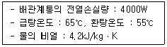
- 5.7L/min
- 10.5L/min
- 20.9L/min
- 30.4L/min
(정답률: 42%)
29. 관내유동에서 층류와 난류를 판단하는 기준이 되는 것은?
- 마하(Mach)수
- 프란틀(Prandtl)수
- 그라쇼프(Grashof)수
- 레이놀즈(Reynolds)수
(정답률: 54%)
30. 다음 설명에 알맞은 통기관의 종류는?
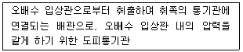
- 습통기관
- 각개통기관
- 결합통기관
- 루프통기관
(정답률: 39%)
31. 급수배관에서 유속을 제한하는 이유와 가장 거리가 먼 것은?
- 캐비테이션 발생 방지
- 크로스 커넥션 발생 방지
- 유수(流水)에 의한 소음 발생 방지
- 워터해머로 인한 관 및 관이음쇠의 손상 발생 방지
(정답률: 50%)
32. 오수처리방법 중 생물박법에 관한 설명으로 옳지 않은 것은?
- 생물학적 처리방법에 속한다.
- 살수여상방식은 쇄석, 플라스틱 여과재가 사용된다.
- 살수여상방식, 회전원판접촉방식, 접촉폭기방식 등이 있다.
- 오니가 폭기조 내부에서 부유하며 오수를 처리하는 방법이다.
(정답률: 43%)
33. 간접배수로 하여야 하는 기구에 속하지 않는 것은?
- 세면기
- 제빙기
- 세탁기
- 식기세척기
(정답률: 67%)
34. 내경 40mm, 길이 20m인 급수관에 유속 2m/s로 물을 보내는 경우 마찰손실수두는? (단, 관마찰계수는 0.02이다.)
- 0.5mAq
- 1.0mAq
- 1.5mAq
- 2.0mAq
(정답률: 34%)
35. 세정벨브식 대변기에 진공 방지기(vacuum breaker)를 설치하는 주된 이유는?
- 사용수량을 줄이기 위하여
- 급수소음을 줄이기 위하여
- 급수오염을 방지하기 위하여
- 취기(냄새)를 방지하기 위하여
(정답률: 54%)
36. 급탕기기의 부속장치에 관한 설명으로 옳지 않은 것은?
- 안전밸브와 팽창탱크 및 배관 사이에는 차단밸브나 체크밸브를 설치한다.
- 온수탱크 상단에는 진공방지밸브(vacuum relief valve)를, 하부에는 배수밸브(drain valve)를 설치한다.
- 밀폐형 가열장치에는 일정 압력 이상이면 압력을 도피시킬 수 있도록 도피밸브나 안전밸브를 설치한다.
- 온수탱크의 보급수관에는 급수관의 압력변화에 의한 환탕의 유입을 방지하도록 역류방지밸브를 설치한다.
(정답률: 59%)
37. 다음 그림에서 배수 트랩의 봉수 깊이를 올바르게 표현한 것은?
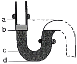
- a~b
- b~d
- b~c
- c~d
(정답률: 54%)
38. 통기관의 설치목적으로 옳지 않은 것은?
- 배수계통 내의 배수 및 공기의 흐름을 원활히 한다.
- 배수관 계통의 환기를 도모하여 관내를 청결하게 유지한다.
- 모세관 현상이나 증발에 의해 트랩의 봉수가 파괴되는 것을 방지한다.
- 배수트랩의 봉수부에 가해지는 배수관 내의 압력과 대기압과의 차에 의해 트랩의 봉수가 파괴되지 않도록 한다.
(정답률: 50%)
39. 다음의 급수방식 중 수질오염 가능성이 가장 큰 것은?
- 수도직결방식
- 고가수조방식
- 압력수조방식
- 펌프직송방식
(정답률: 70%)
40. 이종관의 접합에 관한 설명으로 옳지 않은 것은?
- 연관과 동관의 접합은 납땜 접합한다.
- 강관과 동관의 접합에는 절연이음쇠를 사용하지 않는다.
- 강관과 스테인리스강관의 접합은 원칙적으로 절연이음쇠를 사용한다.
- 주철관과 강관의 접합은 각각 이음을 코킹하여 나사 또는 플랜지 접합한다.
(정답률: 43%)
3과목: 공기조화설비
41. 온수난방방식에 관한 설명으로 옳은 것은?
- 용량제어가 어렵고 응축수에 의한 열손실이 크다.
- 실내온도의 상승이 빠르고 예열손실이 적어 간헐난방에 적합하다.
- 증기난방에 비하여 소요방열면적과 배관경이 작으므로 설비비가 낮다.
- 열용량이 크므로 보일러를 정지시켜도 실내난방이 어느 정도 지속된다.
(정답률: 59%)
42. 다음 중 공기조화설비 배관에서 압력계의 설치 위치로 가장 알맞은 곳은?
- 펌프 출구
- 급수관 입구
- 냉수코일 출구
- 열교환기 출구
(정답률: 50%)
43. 온수배관에 관한 설명으로 옳지 않은 것은?
- 배관의 신축을 고려한다.
- 배관재료는 내식성을 고려한다.
- 온수배관에는 공기가 고이지 않도록 구배를 준다.
- 온수보일러의 팽창관에는 게이트 밸브를 설치한다.
(정답률: 50%)
44. 덕트 내에 흐르는 공기의 풍속이 12m/s, 정압리 100Pa일 경우 전압은? (단, 공기의 밀도는 1,2kg/m3이다.)
- 108.8Pa
- 186.4Pa
- 234.2Pa
- 256.6Pa
(정답률: 42%)
45. 증기트랩 중 플로트 트랩에 관한 설명으로 옳지 않은 것은?
- 다량의 응축수를 처리할 수 있다.
- 급격한 압력변화에도 잘 작동한다.
- 동결의 우려가 있는 곳에 주로 사용된다.
- 증기해머에 의해 내부손상을 입을 수 있다.
(정답률: 34%)
46. 덕트 설계법 중 정압재취득법에 관한 설명으로 옳지 않은 것은?
- 등손실법에 의한 경우보다 송풍기 동력이 절약된다.
- 각 취출구에서 댐퍼에 의한 조절을 하지 않을 경우 예정된 취출풍량을 얻을 수 없다.
- 각 취출구 또는 분기부 직전의 정압을 균일하게 되도록 덕트 치수를 결정하는 설계법이다.
- 각 분기부분에 있어서의 풍속의 감소에 의한 정압재취득을 다음 구간의 덕트저항손실에 이용한다.
(정답률: 50%)
47. 유량조절용으로 사용되며 유체의 흐름방향을 90°로 전환시킬 수 있는 밸브는?
- 볼 밸브
- 체크 밸브
- 앵글 밸브
- 게이트 밸브
(정답률: 50%)
48. 대향류형 냉각탑과 비교한 직교류형 냉각탑의 특징에 관한 설명으로 옳지 않은 것은?
- 설치면적이 크다.
- 열교환 효율이 좋다.
- 팬 소요동력이 작다.
- 점검ㆍ보수가 용이하다.
(정답률: 50%)
49. 다음의 송풍기 풍량제어법 중 축동력이 가장 적게 소요되는 것은?
- 회전수 제어
- 흡입베인 제어
- 흡입댐퍼 제어
- 토출댐퍼 제어
(정답률: 54%)
50. 냉방부하계산에 관한 설명으로 옳지 않은 것은?
- 외벽구조에 따라 상당온도차는 다르게 나타난다.
- 틈새바람에 의한 부하는 현열과 잠열 모두 고려한다.
- 틈새바람량 계산법으로는 틈새법, 면적법, 환기 횟수법 등이 있다.
- 유리를 통한 열부하는 일사에 의한 직접 열취득만을 고려한다.
(정답률: 31%)
51. 실내 설계온도가 20℃인 어떤 실의 난방부하를 계산한 결과 현열부하 qs=15000W, 잠열부하 qL=3000W이었다. 실내 송풍량이 10000kg/h라 하면 이 때 필요한 취출공기의 온도는? (단, 공기의 비열은 1.01kJ/kgㆍK이다.)
- 25.3℃
- 26.6℃
- 27.5℃
- 29.2℃
(정답률: 31%)
52. 송풍기의 회전속도를 일정하게 하고 날개의 직경을 d1에서 d2로 변경했을 때, 동력 L2를 구하는 식으로 알맞은 것은? (단, L1은 직경, d1에서의 동력이다.)
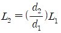
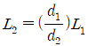
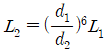
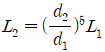
(정답률: 39%)
53. 10인이 재실하는 어떤 실내공간의 CO2 농도를 외기(外氣)로 환기시켜 700ppm 이하로 유지하고자 한다. CO2 발생원인은 인체 이외에는 없으며 1인당 CO2 발생량은 0.022m3/h이라 할 때 필요 환기량은? (단, 외기의 CO2 농도는 300ppm이다.)
- 400m3/h
- 550m3/h
- 700m3/h
- 900m3/h
(정답률: 31%)
54. 다음의 공기조화방식 중 공기ㆍ수 방식에 속하는 것은?
- 유인 유닛방식
- 멀티존 유닛방식
- 팬코일 유닛방식
- 2중덕트 변풍량방식
(정답률: 39%)
55. 온도 35℃, 절대습도 0.01kg/kg'인 공기 150kg과 온도 15℃, 절대습도 0.008kg/kg'인 공기 200kg을 단열혼합할 때 혼합공기의 상태는?
- 온도 23.6℃, 절대습도 0.012kg/kg'
- 온도 23.6℃, 절대습도 0.014kg/kg'
- 온도 24.8℃, 절대습도 0.012kg/kg'
- 온도 24.8℃, 절대습도 0.014kg/kg'
(정답률: 50%)
56. 스모크타워 배연법에 관한 설명으로 옳은 것은?
- 송풍기와 덕트를 사용해서 외부로 연기를 배출하는 방식이다.
- 풍력에 의한 흡인효과와 부력을 이용한 배연탑을 사용하여 연기를 배출하는 방식이다.
- 부력에 의하여 연기를 실의 상부벽이나 천장에 설치된 개구에서 옥외로 배출하는 방식이다.
- 연기를 일정구획 내에 한정하도록 피난이 완전히 끝난 뒤에 개구부를 자동으로 완전 밀폐하는 방식이다.
(정답률: 42%)
57. 30℃의 외기 40%와 23℃의 환기 60%를 혼합하여 냉각코일로 냉각감습하는 경우 바이패스팩터가 0.2이면 코일의 출구 온도는? (단, 코일 표면온도는 10℃이다.)
- 12.16℃
- 13.16℃
- 14.16℃
- 15.16℃
(정답률: 24%)
58. 증기난방에서 방열기의 상당방열면적(EDR)계산에 사용되는 표준방열량은?
- 450W/m2
- 523W/m2
- 650W/m2
- 756W/m2
(정답률: 25%)
59. 공기에 관한 설명으로 옳은 것은?
- 절대습도가 0kg/kg'인 공기를 포화공기라고 한다.
- 현열비가 1이라면 잠열부하만 있다는 것을 의미한다.
- 건구온도 0℃, 절대습도 0kg/kg'인 건공기의 엔탈피는 0kJ/kg이다.
- 열수분비가 0이라면 공기의 상태변화에 절대습도의 변화가 없었다는 의미이다.
(정답률: 39%)
60. 공기조화 용어 중 엔탈피(Enthalpy)가 의미하는 것은?
- 비체적
- 비습도
- 전열량
- 현열량
(정답률: 54%)
4과목: 소방 및 전기설비
61. 합성최대수요전력을 구하는 계수로서 각 부하의 최대수요전력 합계와 합성최대수요전력과의 비율로 나타내는 것은?
- 수용률
- 유효율
- 부하율
- 부등률
(정답률: 47%)
62. 인터폰설비의 통화 방식에 따른 구분에 속하는 것은?
- 모자식
- 상호식
- 전화스피커 방식
- 프레스토크 방식
(정답률: 67%)
63. 소화방법에 관한 설명으로 옳지 않은 것은?
- 희석소화는 가연물질 주변의 공기 중 산소의 농도를 낮추는 소화방법이다.
- 냉각소화는 가연물질의 온도를 낮추어 연소의 진행을 억제하는 소화방법이다.
- 제거소화는 가연물질은 원천적으로 제거하여 연소반응이 진행되는 것을 제거하는 소화방법이다.
- 부촉매소화는 연소반응에서 화학적 작용을 통해 연쇄적 반응으로 화재진행을 억제하는 소화방법이다.
(정답률: 65%)
64. 유효전력과 무효전력의 단위와 구분하기 위하여 사용되는 피상전력의 단위는?
- [W]
- [Ah]
- [VA]
- [VAR]
(정답률: 59%)
65. 조도계산 방식 중 광원에서 나온 전광속이 작업면에서 비춰지는 비율(조명률)에 의해 평균조도를 구하는 것으로 실내전반 조명설계에 사용되는 것은?
- 광속법
- 광도법
- 배광법
- 죽점법
(정답률: 54%)
66. 단상 변압기의 2차 무부하 전압이 220[V]이고, 정격부하에서의 2차 단자전압이 200[V]일 경우 전압 변동률은?
- 5[%]
- 7[%]
- 10[%]
- 12[%]
(정답률: 34%)
67. 3상 농령유도전동기에서 극수 4, 주파수 60Hz, 슬립 4%일 때 회전수는 얼마인가?
- 1728[rpm]
- 1796[rpm]
- 1800[rpm]
- 1872[rpm]
(정답률: 34%)
68. 물질이 양(+) 또는 음(-)으로 대전되어 양전기나 음전기를 띠는 현상의 원인은?
- 전자의 이동
- 양성자의 이동
- 중성자의 이동
- 원핵자의 이동
(정답률: 50%)
69. 포소화설비의 구성 요소에 속하지 않는 것은?
- 약제탱크
- 혼합장치
- 가압송수장치
- 정압작동장치
(정답률: 39%)
70. 영상변류기[ZCT]의 주된 사용목적은?
- 과전압 검출
- 과전류 검출
- 지락전류 검출
- 부하전류 검출
(정답률: 42%)
71. 최대 방수구역에 설치된 스프링클러헤드의 개수가 20개인 경우, 스프링클러설비의 수원의 저수량은 최소 얼마 이상이 되도록 하여야 하는가? (단, 개방형 스프링클러헤드를 사용하는 경우)
- 17m3
- 32m3
- 48m3
- 64m3
(정답률: 42%)
72. 변압기에서 자기유도 작용으로 발생한 자속을 이동시키는 통로의 역할을 하는 것은?
- 철심
- 부싱
- 1차측 코일
- 2차측 코일
(정답률: 59%)
73. DDC 방식에서 밸브나 댐퍼 등을 비례적으로 동작시키는 신호는?
- AI
- DI
- AO
- DO
(정답률: 54%)
74. 단상변압기 3대를 결선하고자 하는 경우, 부하측에 인가되는 전압을 √3배 승압시킬 수가 있으며 3상 4선식 중성점접지 배선방식으로 사용되는 결선 방법은?
- △-Y 결선
- Y-△ 결선
- △-△ 결선
- V-V 결선
(정답률: 34%)
75. 공조설비의 자동제어에서 압력검출소자로 사용되지 않는 것은?
- 모발
- 벨로즈
- 브로돈관
- 다이어프램
(정답률: 50%)
76. 제연설비의 비상전원에 관한 설명으로 옳지 않은 것은?
- 비상전원은 실내에 설치하지 않는다.
- 제연설비를 유효하게 20분 이상 작동할 수 있도록 한다.
- 비상전원의 설치장소는 다른 장소와 방화구획으로 구획한다.
- 상용전원으로부터 전력의 공급이 중단된 때에는 자동으로 비상전원으로부터 전력을 공급받을 수 있도록 한다.
(정답률: 59%)
77. 다음은 상수도소화용수설비의 설치에 관한 기준내용이다. ()안에 알맞은 것은?
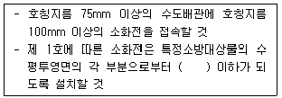
- 50m
- 100m
- 140m
- 180m
(정답률: 39%)
78. 교류회로의 역률을 올바르게 표현한 것은?
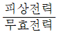
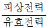
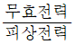
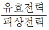
(정답률: 42%)
79. 사인파 전압 V=134sin(314t-30°)의 주파수는?
- 50Hz
- 60Hz
- 70Hz
- 80Hz
(정답률: 47%)
80. 조명기구의 배치방식에 따른 조명방식의 분류에 속하지 않는 것은?
- 전반조명방식
- 국부조명방식
- TAL조명방식
- 반간접조명방식
(정답률: 24%)
5과목: 건축설비관계법규
81. 같은 건축물안에 공동주택과 위락시설을 함께 설치하고자 하는 경우, 공동주택의 출입구와 위락시설의 출입구는 서로 그 보행거리가 최소 얼마 이상이 되도록 설치하여야 하는가?
- 10m
- 20m
- 30m
- 50m
(정답률: 47%)
82. 다음은 건축물의 에너지절약설계기준에 따른 용어의 정의 내용이다. ()안에 알맞은 것은?
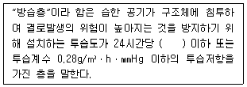
- 10g/m2
- 20g/m2
- 30g/m2
- 50g/m2
(정답률: 34%)
83. 다음은 건축설비 설치의 원칙에 관한 기준 내용이다. ()안에 알맞은 것은?
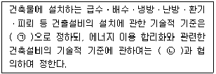
- ㉠ 국토교통부령, ㉡ 산업통상자원부장관
- ㉠ 산업통상자원부령, ㉡ 국토교통부장관
- ㉠ 국토교통부령, ㉡ 과학기술정보통신부장관
- ㉠ 과학기술정보통신부령, ㉡ 국토교통부장관
(정답률: 59%)
84. 다음 소방시설 중 피난구조설비에 속하는 것은?
- 제연설비
- 비상조명등
- 비상방송설비
- 비상콘센트설비
(정답률: 59%)
85. 다음 중 소리를 차단하는데 장애가 되는 부분이 없도록 그 구조를 갖추어야 하는 대상 경계벽에 속하지 않는 것은?
- 숙박시설의 객실 간 경계벽
- 의료시설의 병실 간 경계벽
- 업무시설의 사무실 간 경계벽
- 교육연구시설 중 학교의 교실 간 경계벽
(정답률: 62%)
86. 세대수가 4세대인 주거용 건축물의 먹는물용 급수관 지름의 최소 기준은? (단, 가압설비 등을 설치하지 않은 경우)
- 20mm
- 25mm
- 32mm
- 40mm
(정답률: 50%)
87. 비상용승강기의 승강장의 바닥면적은 비상용 승강기 1대에 대하여 최소 얼마 이상으로 하여야 하는가? (단, 옥내에 승강장을 설치하는 경우)
- 5m2
- 6m2
- 7m2
- 8m2
(정답률: 50%)
88. 특정소방대상물이 문화 및 집회시설 중 공연장인 경우, 모든 층에 스프링클러설비를 설치하여야 하는 수용인원 기준은?
- 50명 이상
- 100명 이상
- 200명 이상
- 500명 이상
(정답률: 50%)
89. 방염성능기준 이상의 실내장식물 등을 설치하여야 하는 특정소방대상물에 속하지 않는 것은? (단, 층수가 11층 미만인 경우)
- 의료시설
- 교육연구시설 중 합숙소
- 숙박이 가능한 수련시설
- 업무시설 중 주민자치센터
(정답률: 58%)
90. 각 층의 거실면적이 각각 2000m2이며 층수가 8층인 백화점에 설치하여야 하는 승용승강기의 최소 대수는? (단, 15인승 승강기의 경우)
- 2대
- 3대
- 4대
- 5대
(정답률: 50%)
91. 건축법령상 다음과 같이 정의 되는 용어는?
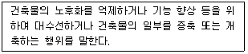
- 재축
- 리빌딩
- 리모델링
- 리노베이션
(정답률: 59%)
92. 건축물에 설치하는 복도의 유효너비 기준이 옳지 않은 것은? (단, 연면적 200m2를 초과하는 건축물이며, 양옆에 거실이 있는 복도의 경우)
- 초등학교 - 1.8m 이상
- 오피스텔 - 1.8m 이상
- 공동주택 - 1.8m 이상
- 고등학교 - 2.4m 이상
(정답률: 62%)
93. 건축법령상 다중이용 건축물에 속하지 않는 것은? (단, 층수가 16층 미만인 경우)
- 종교시설의 용도로 쓰는 바닥면적의 합계가 5000m2인 건축물
- 판매시설의 용도로 쓰는 바닥면적의 합계가 5000m2인 건축물
- 업무시설의 용도로 쓰는 바닥면적의 합계가 5000m2인 건축물
- 문화 및 집회시설 중 전시장의 용도로 쓰는 바닥면적의 합계가 5000m2인 건축물
(정답률: 59%)
94. 문화 및 집회시설 중 공연장의 개별관람실의 바닥면적이 1000m2일 경우, 이 관람실에 설치하여야 하는 출구의 최소 개소는? (단, 각 출구의 유효너비를 1.5m로 하는 경우)
- 3개소
- 4개소
- 5개소
- 6개소
(정답률: 25%)
95. 다음 중 허가 대상에 속하는 건축물의 용도 변경은?
- 장례시설에서 발전시설로의 용도변경
- 위락시설에서 숙박시설로의 용도변경
- 종교시설에서 운동시설로의 용도변경
- 업무시설에서 교육연구시설로의 용도변경
(정답률: 47%)
96. 건축물의 경사지붕 아래에 설치하는 대피공간에 관한 기준 내용으로 옳지 않은 것은?
- 특별피난계단 또는 피난계단과 연결되도록 할 것
- 출입구의 유효너비는 최소 1.2m 이상으로 할 것
- 관리사무소 등과 긴급 연락이 가능한 통신 시설을 설치할 것
- 대피공간의 면적은 지붕 수평투영면적의 10분의 1 이상 일 것
(정답률: 50%)
97. 다음의 공동주택의 환기설비기준에 관한 내용 중 ()안에 알맞은 것은?
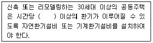
- 0.5회
- 1.0회
- 1.2회
- 1.5회
(정답률: 59%)
98. 건축물의 에너지절약설계기준에 따른 건축부문의 권장사랑 내용으로 옳지 않은 것은?
- 건축물의 체적에 대한 외피면적의 비 또는 연면적에 대한 외피면적의 비는 가능한 작게 한다.
- 문화 및 집회시설 등의 대공간의 최상부에는 자연배기 또는 강제배기가 가능한 구조 또는 장치를 채택한다.
- 수영장에는 자연채광을 위한 개구부를 설치하되, 그 면적의 합계는 수영장 바닥면적의 10분의 1 이상으로 한다.
- 학교의 교실, 문화 및 집회시설의 공용부분(복도, 화장실, 휴게실, 로비 등)은 1면 이상 자연채광이 가능하도록 한다.
(정답률: 34%)
99. 공사감리자가 공사시공자에게 상세시공도면의 작성을 요청할 수 있는 건축공사의 기준으로 옳은 것은?
- 연면적의 합계가 1000m2 이상인 건축공사
- 연면적의 합계가 2000m2 이상인 건축공사
- 연면적의 합계가 3000m2 이상인 건축공사
- 연면적의 합계가 5000m2 이상인 건축공사
(정답률: 50%)
100. 옥외소화전설비를 설치하여야 하는 특정소방대상물에 속하지 않는 것은? (단, 지상 1층 및 2층의 바닥면적의 합계가 9000m2 인 경우)
- 아파트등
- 종교시설
- 판매시설
- 교육연구시설
(정답률: 47%)